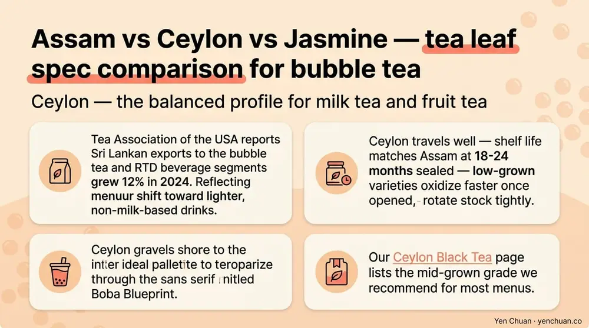
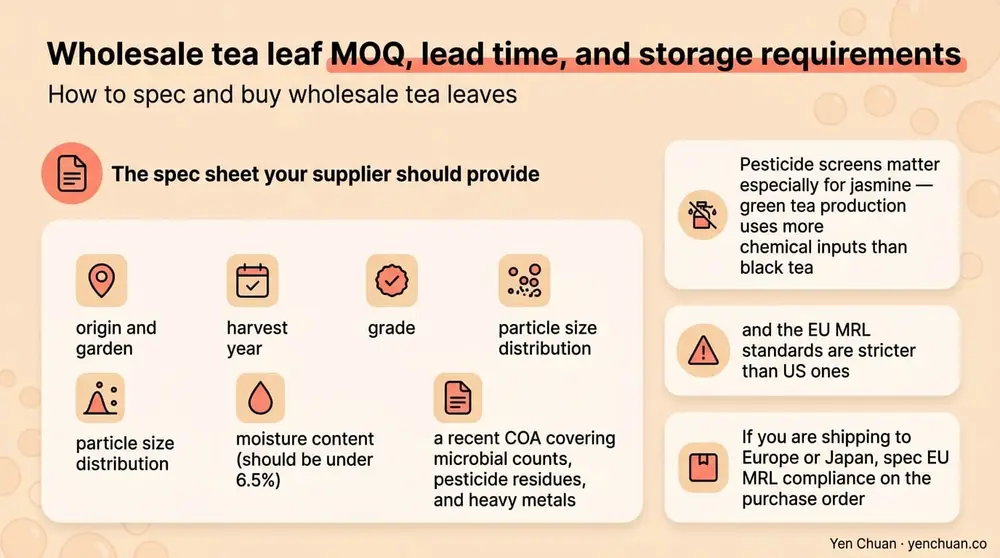

Articles / Business & sourcing
Wholesale Tea Leaves for Bubble Tea: Buyer Guide
2026-05-14 · Product Spotlight, Sourcing

Tea leaves are the quietest ingredient in a bubble tea cup and also the one that decides how the drink actually tastes. A chain that nails its tapioca, creamer, and sugar ratios can still serve a flat menu if the base tea is wrong. This guide compares the three tea leaf varieties that carry 70-80% of global bubble tea menus — Assam, Ceylon, and Jasmine — and shows how B2B buyers source them, grade them, and match them to specific drink applications. It is written for procurement teams spec'ing their next container, not for home brewers or retail consumers.
Why tea leaves still matter when powder is easier
Many newer chains default to all-in-one milk tea powder because it is fast, consistent, and cheap. It works for a volume menu. But brewed-leaf drinks remain the margin category — the signature classic milk tea, the fruit tea bases, the cheese tea foundations. Grand View Research's 2025 bubble tea report pegs brewed-leaf offerings at 35-40% of North American menu mix and growing, driven by premium positioning and clean-label expectations.
Brewed leaf also gives a shop something powder cannot: a point of differentiation. Two chains can run identical creamer and pearls and still taste different because one brews CTC Assam and the other brews orthodox Ceylon. If you are building a menu meant to be defensible against a competitor three blocks away, the tea leaf choice is where that defense starts. For the full product range across black, green, and oolong cultivars, our Loose Leaf Tea Wholesale page lists the SKUs we stock for export customers.
Assam — the CTC workhorse for milk tea
Assam comes from the Brahmaputra valley in northeastern India. It is grown at low elevation in hot, humid conditions, which produces a leaf with high catechin and tannin content. That is exactly what you want when the drink will be cut with a heavy non-dairy creamer or whole milk — the tea needs to punch through the fat. Without that backbone, milk tea tastes like sweetened cream.
Most Assam used in bubble tea is CTC (crush-tear-curl), not orthodox. CTC produces uniform small pellets that brew fast, extract fully in 4-6 minutes, and deliver the malty, slightly astringent base that classic Taiwanese milk tea was built on. The grade tiers most buyers see are BP (broken pekoe), PF (pekoe fannings), and Dust grades — BP is usually the best price-quality balance for bubble tea shops. Expect to pay 15-25% more than commodity grades for a clean second-flush Assam with no stem content.
Storage is forgiving but not infinite. Assam holds flavor for 18-24 months in sealed moisture-barrier packaging at ambient temperature. Once opened, quality drops noticeably at month six. Buyers shipping to humid climates — Houston, Singapore, Jakarta — should spec 5-kg nitrogen-flushed bags rather than 20-kg bulk sacks.
For spec buyers, our Assam Black Tea SKU is the CTC grade we ship to most chain accounts.
Ceylon — the balanced profile for milk tea and fruit tea
Ceylon is the trade name for tea grown in Sri Lanka. The island has three elevation zones — low-grown (up to 600m), mid-grown (600-1200m), and high-grown (above 1200m) — and each zone produces a distinct profile. High-grown Ceylon from Nuwara Eliya is bright, floral, and lighter; low-grown Ceylon from Ruhuna is dark, strong, and more Assam-like.
For bubble tea, mid-grown Ceylon (Uva, Dimbula) is the sweet spot. It is assertive enough for milk tea but clean enough to use as a fruit tea base without clashing with peach, passion fruit, or lychee. Many Taiwanese chains default to Ceylon for their "classic black tea" menu item because it brews amber-red — visually distinct from the darker Assam-based milk tea base.
Grade markings on Ceylon are different from Assam. Look for OP (orthodox pekoe), FBOP (flowery broken orthodox pekoe), or BOPF (broken orthodox pekoe fannings). FBOP is the most common spec for bubble tea — it brews clean, extracts in 5-7 minutes, and has enough leaf structure to survive a high-volume hot-water dispenser.
The Tea Association of the USA reports Sri Lankan exports to the bubble tea and RTD beverage segments grew 12% in 2024, reflecting menu shift toward lighter, non-milk-based drinks. Ceylon travels well — shelf life matches Assam at 18-24 months sealed — but low-grown varieties oxidize faster once opened, so rotate stock tightly. Our Ceylon Black Tea page lists the mid-grown grade we recommend for most menus.

Jasmine green tea — the floral base that carries fruit menus
Jasmine is not a tea cultivar — it is a scenting process. Green tea leaves (usually a Fujian or Guangxi chunmee base) are layered with fresh jasmine blossoms over 4-8 nights. The leaves absorb the floral aromatic compounds, the blossoms are then sifted out, and the tea is fired dry. Higher grades are scented more times; the top grades can be scented seven or eight rounds and carry a noticeable price jump.
For bubble tea, a three-to-five-scent grade is the practical ceiling. Beyond that, the fragrance overpowers milk and fruit mix-ins. The drinks that need jasmine are the ones where tea is the headline note — jasmine milk tea, jasmine peach green tea, jasmine lemonade, jasmine oat milk lattes. It is also the dominant base for cheese tea and cold brew applications because its light body holds up to dairy foam and long extraction.
Jasmine green tea is more fragile than black tea. Shelf life is 9-12 months sealed, dropping to 3-4 months once opened. Light and oxygen are the main enemies — aluminum-lined moisture-barrier pouches are standard. Ship in refrigerated containers if transit exceeds 30 days or origin-to-destination temperature swings are high.
Cost-wise, expect mid-grade jasmine to run 40-60% higher per kilogram than CTC Assam at comparable volumes. That cost flows into menu pricing — a well-made jasmine milk tea usually carries a premium tag on the menu board. Our Jasmine Green Tea SKU is a three-scent grade that balances fragrance and cost.
How to spec and buy wholesale tea leaves
Once you know which variety fits your menu, the procurement mechanics are similar across all three. Most Taiwan-based suppliers quote in 5-kg cartons or 20-kg woven bags, with MOQs starting at 200-500 kg per SKU for first orders. Container-level buyers moving 5 tons or more unlock second-tier pricing.
The spec sheet your supplier should provide includes origin and garden, harvest year, grade, particle size distribution, moisture content (should be under 6.5%), and a recent COA covering microbial counts, pesticide residues, and heavy metals. Pesticide screens matter especially for jasmine — green tea production uses more chemical inputs than black tea, and the EU MRL standards are stricter than US ones. If you are shipping to Europe or Japan, spec EU MRL compliance on the purchase order.
| Variety | Typical Grade | Brew Time | Best Drink Application | Shelf Life (Sealed) | Price vs CTC Assam |
|---|---|---|---|---|---|
| Assam CTC | BP, PF | 4-6 min | Classic milk tea, boba milk | 18-24 months | Baseline |
| Ceylon | FBOP, OP | 5-7 min | Fruit tea, lighter milk tea | 18-24 months | +10-20% |
| Jasmine green | 3-5 scent | 3-5 min | Floral milk tea, cold brew, cheese tea | 9-12 months | +40-60% |

Lead times run 15-25 days in production plus 14-21 days ocean freight to the US West Coast. For a shop planning a menu launch, start the order cycle at least 10 weeks out. For further procurement mechanics covering MOQs, Incoterms, and document flow, our milk tea supplier guide walks through the full vetting and negotiation process.
Matching tea leaves to your menu
The shortest path to a coherent menu is to pick two black teas (one Assam-based milk tea, one Ceylon-based fruit tea) plus one jasmine for signature floral drinks. Three SKUs cover roughly 90% of a mainstream bubble tea menu and keep inventory manageable. Adding an oolong or pu-erh comes later, once volume is stable and you have the storage discipline to rotate slower-moving stock.
For chains sourcing across multiple regions, the Taiwan vs China vs Southeast Asia sourcing breakdown explains where each variety is best priced and which origin to spec for which menu tier.
Authority Citations
- Grand View Research — Bubble Tea Market Report
- Tea Association of the USA
- International Tea Committee — Annual Statistics
- FDA Import Requirements for Tea
- USDA Foreign Agricultural Service — Tea Trade Data
About Yen Chuan
Yen Chuan has been at the heart of Taiwan's bubble tea industry for over 20 years, supplying premium powders, syrups, tapioca pearls, and tea leaves to thousands of boba shops worldwide. With an in-house R&D lab and a commitment to quality ingredients, Yen Chuan is more than a supplier — we're your partner in the boba business. Our tea buyers visit the Assam, Sri Lanka, and Fujian growing regions each year to maintain direct relationships and lock harvest windows for our chain customers.
Ready to spec your next tea order?
Looking for premium Assam, Ceylon, or jasmine green tea for your boba menu? Browse our tea leaf catalog or get in touch with our team to request samples — we ship worldwide from Taiwan and can match any menu spec, from a single shop to a multi-container annual contract.
Frequently Asked Questions
Q: Which tea leaf is best for classic bubble milk tea? A: CTC Assam is the standard for classic milk tea because its malty, tannic body cuts through non-dairy creamer and sugar without disappearing. Ceylon works as a lighter alternative. Jasmine is too floral for the classic profile but shines in premium milk tea variants.
Q: What's the difference between CTC and orthodox tea? A: CTC (crush-tear-curl) produces small uniform pellets that brew fast and extract strong flavor — the standard for milk tea applications. Orthodox leaves are whole or large-leaf, brew slower, and keep a cleaner flavor profile — preferred for fruit teas and lighter menu items.
Q: How long do wholesale tea leaves stay fresh? A: Black teas (Assam, Ceylon) last 18-24 months sealed in moisture-barrier packaging. Jasmine green tea is shorter at 9-12 months because of its floral volatiles. Once opened, all varieties drop quality noticeably after 4-6 weeks.
Q: What MOQ should I expect for wholesale tea leaves? A: Taiwan-based suppliers typically start at 200-500 kg per SKU for first orders. Container-level buyers moving 5 tons or more unlock second-tier pricing. Lead time is 15-25 days in production plus 14-21 days ocean freight to the US West Coast.
Q: Do I need pesticide residue testing for imported tea? A: Yes — every shipment should come with a COA covering microbial counts, pesticide residues, and heavy metals. EU MRL standards are stricter than US ones, so spec compliance explicitly on the purchase order if shipping to Europe or Japan.